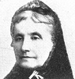

Alison Booth
Cairns, C. C. A Book of Noble Women. London and Edinburgh: Jack, [1911]; [1912]; 1913.
TOC: Saint Margaret, Queen of Scotland; Catherine of Siena; Vittoria Colonna; Jeanne d'Albret, Queen of Navarre; Lady Rachel Russell; Lady Grisell Baillie; Louisa, Queen of Prussia; Sarah Siddons; Jenny Lind; Louisa Alcott; Catherine Booth; Dorothea Beale.
British Library stamp 20 Oct 11. Acknowledges other sources in Preface (vii-viii). While some subjects are literally noble, Cairns uses “noble” in the sense that Chappell does in collections of "noble women", "noble work", or "noble workers", i.e. called to religious social service.
--Catherine of Siena, d. 1380, canonized 1461: “we cannot judge her by common standards, nor perhaps accept her example as a safe one to follow” (50); a beloved nurse of people during the black plague, a negotiator with Popes who sat “on a throne among princes” (51).
--Lady Russell at the trial: “the sternest hearts there softened for a moment” (125); “We wonder how this easy-humoured king could have resisted Lady Russell pleading on her knees for her husband's life. She left nothing untried” (126). “She gave [Lord Russell] no disturbance at their parting” (127).
--Compares Catherine Booth (of Salvation Army) and Dorothea Beale (pioneer educator): “both endowed with such great mental and spiritual force, looked at life from very different angles. Where the one held the lamp of Knowledge to trace the Presence of God in all he had made, the other saw a world lying in sin and wickedness.” Both sought “to make dead things live again. Their separate spheres met in their fellowship with Mrs. Josephine Butler. . . . What the womanhood of the future will owe to the powers, the devotion, the passion of these great women of the Victorian time can be measured in some degree by the awakening of women in our day.” Closing vision of procession of great women holding torches (367-68).
See also Pop ChartSearch OCLC WorldCat for this title.
Search Google Books for this title.
Cameron, Isabelle Dorothea, comp. The American Book of Beauty. New York: Russell, 1904. Compare Anonymous [By a Lady], same title, New York: Wilson, 1845.
Search OCLC WorldCat for this title.
Search Google Books for this title.
Canadian Women's Press Club. Who's Who at the Third International Congress of Women Held in the Buildings of the University of Toronto, Toronto, Canada, June 24th to 30th, 1909. [Toronto]: Toronto Branch of the Canadian Women's Press Club, 1909.
Search OCLC WorldCat for this title.
Search Google Books for this title.
Carey, Rosa Nouchette. Twelve Notable Good Women of the XIX Century, with Twelve Portraits. Lives of Eminent Women and Tales for Girls London: Hutchinson; New York: Dutton, 1899; 1901; 1904.
See How To Make It as a Woman, 64-65.
TOC: Introduction; Queen Victoria; Florence Nightingale; Elizabeth Fry; The Baroness Burdett-Coutts; The Princess of Wales; The Duchess of Teck; Sister Dora; Agnes Weston; Grace Darling; The Princess Alice; Lady Henry Somerset; Frances Ridley Havergal. .
See also Pop Chart
Search OCLC WorldCat for this title.
Search Google Books for this title.
Carr, Kent. Girls Who Were Famous Queens. Illustrated by P. B. Hickling. London: Partridge, [1915].
British Library. Prolific children's writer of titles such as Brought to Heel and Caught Out! , pub. by Partridge or Chambers, 1904-1925. The foreword of Girls begins: “Love is the oldest magic in the world” (xi), and the story of “Matilda the Good 1080-1118” begins under a heading “Love Stories of Royal Girlhood”: “Few princesses have ever had so stirring a love story as Matilda” (13; pagination leaps from xii to 13). Running title= “Love Stories of Royal Girlhood.” This work is probably identical to: Love Stories of Royal Girlhood . Illus. by P.B. Hickling. London: Partridge, 1913.
Search OCLC WorldCat for this title.
Search Google Books for this title.
Carr, Kent. Women Who Dared: Heroines of the Great War. London: Partridge, 1920.
Search OCLC WorldCat for this title.
Search Google Books for this title.
Carron, Guy Toussaint Julien. Young Ladies' Mirror; or, Models of Piety Proposed to the Imitation of Young Ladies who Aspire to Christian Perfection. Translated by Rev. Edward Peach. Philadelphia: M. Fithian, 1834. As: Pious Biography, 2d ed., Philadelphia: Cummiskey, 1834.
Search OCLC WorldCat for this title.
Search Google Books for this title.
Cary, Alice, and Phoebe Cary, eds. The Josephine Gallery. Illustrated by Thomas Bailey [Aldrich?], Philadelphia: Lippincott, 1858; 1859; 1864; 1869. New York: Derby & Jackson, 1859; 1861.
Chapter titles: Eras in Woman’s Life; Josephine; Madame de Sévigné; Marie Louise; Suburban Romance; Charlotte Corday; The Fountain Very Far Down; Madame Roland; "Catch the Sunshine"; Bertram the Lime Burner; Madame Junot; A Mule Ride in Madeira; Madame Récamier; Paul Pyne; Pauline Bonaparte; Caroline Bonaparte; Lost Alice; Madame de Staël; Hortense; Phantoms of Fonainebleau; M’lle Lenormand; Madame Jerome Bonaparte; The Last Picture; Grace Ingersoll; Madame Regnault; M’lle Georges.
Biographies of women of the Bonaparte family.
-
 Josephine
Josephine -
 Charlotte Corday
Charlotte Corday -
 Madame Roland
Madame Roland -
 Madame Tallien
Madame Tallien -
Madame Junot
-
Madame Recamier
-
 Pauline Bonaparte
Pauline Bonaparte -
 Mlle Lenormand
Mlle Lenormand
Search OCLC WorldCat for this title.
Search Google Books for this title.
Cather, Katherine Dunlap. Girlhood Stories of Famous Women: Clothilde of Burgundy, Judith of France, Dagmar of Denmark, Eleanor of Poitou, Philippa of Hainault, Jacquelin of Hainault, Yolanda of Aragon, Isabella of Portugal, Elizabeth of England, Mary of Scotland, Vittoria Colonna, Marie Antoinette, Louise Vigée, Martha Washington. Illustrated. New York and London: Century, 1924 1937.
Search OCLC WorldCat for this title.
Search Google Books for this title.
Caulkins, Frances Manwaring. Eve and Her Daughters of Holy Writ; or, Women of the Bible. New York: American Tract Society, 1861.
Search OCLC WorldCat for this title.
Search Google Books for this title.
Chadwick, John White. Women of the Bible. New York: Harper, 1900.
TOC: Eve; Sarah; Rebekah; Miriam; Deborah; Ruth, the Gleaner; Hannah; Jezebel; Esther; Mary Magdalen; Mary and Martha; The Blessed Virgin Mary.
See Women of the Bible, By Eminent Divines. Also catalogued anonymously.
-
 Eve
Eve -
 Sarah
Sarah -
 Rebekah
Rebekah -
 Miriam
Miriam -
Deborah
-
 Hannah
Hannah -
 Ruth, The Gleaner
Ruth, The Gleaner -
 Jezebel
Jezebel -
 Esther
Esther -
Mary Magdalen
-
Mary and Martha
-
 Blessed Virgin Mary
Blessed Virgin Mary
Search OCLC WorldCat for this title.
Search Google Books for this title.
Challice, Annie Emma Armstrong. French Authors at Home. 2 vols., London: Booth, 1864.
NOT:=male-female collective biography. Full title: French Authors at Home. Episodes in the Lives and Works of Balzac--Madame de Girardin--George Sand--Lamartine--Léon Gozlan--Lamennais--Victor Hugo, etc. Challice also published as “Annie E. Armstrong,” author of juvenile fiction.
Search OCLC WorldCat for this title.
Search Google Books for this title.
Challice, Annie Emma Armstrong. Illustrious Women of France 1790-1873. Illustrated. London: Bradbury, Agnew; New York, Scribner, Welford, 1873. London: n.p., [1900s?].
TOC: Madame Tallien; Empress Joséphine, Queen Hortense, and Caroline Bonaparte; Duchesse d'Angoulême and Duchesse de Berri; Queen Marie Amélie and Duchesse d'Orléans; Empress Eugénie and Princess Mathilde.
Search OCLC WorldCat for this title.
Search Google Books for this title.
Challice, Annie Emma Armstrong. The Sister of Charity; or, From Bermendsey to Belgravia. 2 vols. London: Bentley, 1857.
NOT:=advice, reform typology.
Search OCLC WorldCat for this title.
Search Google Books for this title.
Chambers, William, ed.] Lives of Eminent Women and Tales for Girls, from Chambers’ Miscellany. London and Edinburgh: Chambers, 1886.
TOC: Joan of Arc; Elizabeth Stuart; Grace Darling; Grizel Cochrane; Flora MacDonald; Mrs. MacClarty; Helen Gray; The Sister of Rembrandt; Madame Roland.
British Library. Univ. of Georgia copy: bookplate: “Royal School,/ Dunkeld./ Session 1897-1898./Standard III/Isobel MacNaughton/Second Prize/ G. R. Croll, M.A./ Rector.” Amazonian Joan of Arc in gold on cover, with raised fist and lance. Frontis. “Grace Darling.” Pagination resumes repeatedly (probably issues bound together).
See also Pop ChartSearch OCLC WorldCat for this title.
Search Google Books for this title.
Chapin, Clara Christiana Morgan , ed. Thumb Nail Sketches of White Ribbon Women. Chicago: Women's Temperance Publishing Association, 1895.
TOC: Mary Clement Leavitt; Frances E. Willard; Lady Henry Somerset; Anna Gordan; Jessie Ackerman; Elizabeth Wheeler Andrew; Kate C. Bushnell; Alice Palmer; Frances Barnes; Mary Hunt; Hannah Whitall Smith; Josephine Butler; L. M. N. Stevens; Katharine Lente Stevenson; Clara Hoffman; Helen Barker; Louise Rounds; Susan Fessenden; Mary Burt; Margaret Sudduth; Jennie Stewart; Caroline Grow; Matilda Carse; Letitia Youmans; Mary Farnham; Pundita Kamabai; Mother Thompson; Mother Stewart; Margaret Brooke Lucas; Julia Ames; Madame Willard; Mary Allen West; Mary Woodbridge; Mary Lathrap; Ella Williams; Harriet Kells; Zeralda Wallace.
-
Mary Clement Leavitt
-
 Frances E. Willard
Frances E. Willard -
Lady Henry Somerset
-
Anna Gordan
-
 Jessie Ackerman
Jessie Ackerman -
Elizabeth Wheeler Andrew
-
 Kate C. Bushnell
Kate C. Bushnell -
 Alice Palmer
Alice Palmer -
Frances Barnes
-
 Mary Hunt
Mary Hunt -
 Hannah Whitall Smith
Hannah Whitall Smith -
Josephine Butler
-
 L. M. N. Stevens
L. M. N. Stevens -
Katharine Lente Stevenson
-
 Clara Hoffman
Clara Hoffman -
 Helen Barker
Helen Barker -
 Louise Rounds
Louise Rounds -
 Susan Fessenden
Susan Fessenden -
Mary Burt
-
Margaret Sudduth
-
 Jennie Stewart
Jennie Stewart -
Caroline Grow
-
 Matilda Carse
Matilda Carse -
Letitia Youmans
-
 Mary Farnham
Mary Farnham -
 Pundita Kamabai
Pundita Kamabai -
 Mother Thompson
Mother Thompson -
Mother Stewart
-
Margaret Brook Lucas
-
Julia Ames
-
Madame Willard
-
 Mary Allen West
Mary Allen West -
Mary Woodbridge
-
Mary Lathrap
-
 Ella Williams
Ella Williams -
 Harriet Kells
Harriet Kells -
 Zeralda Wallace
Zeralda Wallace
Search OCLC WorldCat for this title.
Search Google Books for this title.
Chapman, Mrs. E. F. [Georiana Charlotte Clive Bayley Chapman], and Harriot Georgina Hamilton-Temple-Blackwood of Dufferin and Ava. Sketches of Some Distinguished Indian Women. London and Calcutta: Allen, 1891.
TOC: 1. Introduction; 2. The Pundita Ramabai Sarasvati; 3. Dr. Anandibai Joshee; 4. The Maharani of Kuch Behar; 5. Toru Dutt; 6. Cornelia Sorabji.
Search OCLC WorldCat for this title.
Search Google Books for this title.
Chapman, William. Notable Women of the Covenant: Their Lives and Times. London: Swan Sonnenschein, 1883.
British Library. These three titles by William Chapman, identical to those of James Anderson, appear in Riches.
TOC: The Viscountess of Kenmure; The Marchioness of Agyll; The Countess of Balcarres (The Countess of Argyll) and her Daughter; Mrs. James Guthrie; Mrs. James Durham; Mrs. James Carstairs; Mrs. John Livingstone; Mrs. William Veitch; Isabel Alison; Marion Harbey; Margaret Wilson; Margaret McLauchland; Lady Caldwell; The Marchioness of Hamilton; The Duchess of Hamilton; The Duchess of Atholl; Lady Boyd; The Duchess of Rothes; The Countess of Crawford; Lady Culross; Lady Colvill; Lady Graden; Lady Baille.
Search OCLC WorldCat for this title.
Search Google Books for this title.
Chapman, William. Notable Women of the Puritan Times. London: Swan Sonnenschein, 1883; Sonnenschein, Lowrey, 1887.
Search OCLC WorldCat for this title.
Search Google Books for this title.
Chapman, William. Notable Women of the Reformation: The Lives and Times. London: Swan Sonnenschein, 1884.
TOC: Ursula Cotta; Katharine Von Bora; Elizabeth of Brandenberg; The Princess of Henneberg; Sibylla of Cleves; The Princess of Schwartzburg; The Electress Palatine; Anna Reinhard and Idelette Calvin; Marguerite, Queen of Navarre; Renee, Duchess of Ferrara; Leonor de Cisneros; Maria De Bohorques.
Search OCLC WorldCat for this title.
Search Google Books for this title.
Chappell, Jennie. Four Noble Women and Their Work. London: Partidge, 1898. Subtitle: Sketches of the Life Work of Frances Willard, Agnes Weston, Sister Dora, and Catherine Booth. London: Partridge, 1910. Also Four Noble Women: Frances Willard, Agnes Weston, Sister Dora, Catherine Booth. London and Glasgow: Pickering & Inglis, 1933.
Chappell also contributed to The King's Daughters [1930]. Her subjects are similar to the World's Workers Series by Alldridge, Browne, and Tomkinson (1880s-1890s). See the re-issue as part of Noble Workers.
See also Pop Chart-
 Frances Willard
Frances Willard -
Frances Willard
-
 Willard Home
Willard Home -
Frances Willard
-
 Agnes Weston
Agnes Weston -
Agnes Weston
-
 Weston's Audience
Weston's Audience -
Devonport
-
Refreshment Bar
-
Sister Dora
-
 Sister Dora
Sister Dora -
Sister Dora Statue
-
 Catherine Booth
Catherine Booth -
 Catherine Booth
Catherine Booth -
 Catherine Booth
Catherine Booth -
 Catherine Booth
Catherine Booth -
Oceanville
-
Booth Sitting-Room
Search OCLC WorldCat for this title.
Search Google Books for this title.
Chappell, Jennie. Noble Work by Noble Women: Sketches of the Lives of Baroness Burdett-Coutts, Lady Henry Somerset, Miss Sarah Robinson, Mrs. Fawcett, Mrs. Gladstone. London: Partridge, 1900; 1910.
See the re-issue as part of Noble Workers.
See also Pop ChartSearch OCLC WorldCat for this title.
Search Google Books for this title.
Chappell, Jennie. Noble Workers: Sketches of the Life-Work of Frances Willard, Agnes Weston, Sister Dora, Catherine Booth, the Baroness Burdett-Coutts, Lady Henry Somerset, Sarah Robinson, Mrs. Fawcett, and Mrs. Gladstone. London: Partridge, 1910.
TOC: Frances Willard; Agnes Weston; Sister Dora; Catherine Booth; Baroness Burdett-Coutts; Lady Henry Somerset; Sarah Robinson; Mrs. Fawcett; Mrs. Gladstone.
A re-issue of Four Noble Women and Their Work and Noble Work by Noble Women.
-
Frances Willard
-
Willard Home
-
Frances Willard
-
Agnes Weston
-
Weston's Audience
-
Davonport
-
Refreshment Bar
-
Sister Dora
-
Sister Dora Statue
-
Catherine Booth
-
Catherine Booth
-
Catherine Booth
-
Oceanville
-
Booth Sitting-Room
-
Baroness Burdett-Coutts
-
Baroness Burdett-Coutts
-
Baroness Burdett-Coutts
-
Philippa Fawcett
-
Aldeburgh
-
Philippa Fawcett
-
Mrs. Gladstone
-
Hawarden Castle
-
Sarah Robinson
-
Lady Henry Somerset
Search OCLC WorldCat for this title.
Search Google Books for this title.
Chappell, Jennie. Women Who Have Worked and Won: The Life-Story of Mrs. Spurgeon, Mrs. Booth-Tucker, F. R. Havergal, and Pandita Ramabai. London: Partridge, 1904. London and Glasgow: Pickering & Inglis, n. d., 1928.
Search OCLC WorldCat for this title.
Search Google Books for this title.
Chappell, Jennie. Women of Worth: Sketches of the Lives of Carmen Silva, Frances Power Cobbe, Isabella Bird Bishop, and Mrs. Bramwell Booth. London: Partridge, 1908.
Search OCLC WorldCat for this title.
Search Google Books for this title.
[Charles, Elizabeth Rundle]. Sketches of the Women of Christendom By the Author of “Chronicles of the Schönberg-Cotta Family.” “English ed. New York: Dodd, Mead, 1880. London and New York: Pott, 1880. London: Society for Promoting Christian Knowledge (SPCK); New York: Young, 1889; [1900?].
TOC: Eve; Mary; Mary Magdalene; Lois; Eunice; Lydia; Aquila; Priscilla; Blandina; Perpetua; Felicitas; Monica, Mother of St. Augustine; Hilda, the Abbess; Joan of Arc; Prascovia Lopouloff; Lady Rachel Russell; Madame Elizabeth of France; Susannah Wesley; Catherine Tait, wife of archbishop of Canterbury; Mlle Legras; Hannah More; Sarah Martin; Elizabeth Fry.
Author of at least 12 vols. for Nelson, advertised in Thayer, 1897.
See also Pop ChartSearch OCLC WorldCat for this title.
Search Google Books for this title.
[Charles, Elizabeth Rundle]. Three Martyrs of the Nineteenth Century: Studies from the Lives of Livingstone, Gordon, and Patteson. Published under the Direction of the Tract Committee/ Committee of General Literature and Education. London and New York: SPCK, Young, 1885; 1886; 1887; 1889; 1891; 1895; 1899; 1906. New York: Dodd, Mead, [n.d.].
NOT:=male collective biography. Anonymous in 1885. Mrs. Rundle Charles stated as author, 1895.
Search OCLC WorldCat for this title.
Search Google Books for this title.
[Charles, Elizabeth Rundle]. ed. The Women of the Gospels: Meditations on Some Traits of Feminine Character Recorded by the Evangelists: Selected from the Works of Chrysostom, Augustine, Calvin, Jeremy Taylor, and Other Writers. London: Seeley, Jackson & Halliday, 1868. New York: M.W. Dodd 1870.
TOC: Ministry; Mary, the Mother of Our Lord; Mary Magdalene; Salome; The Widow of Nain; The Syrophenician; The Sisters of Bethany; The Unnamed Women; The Two Alabaster Boxes; The Three Wakings; The Golden Age in the Present; The Poet's Food; A True Dream; The Apline Gentian; The Forget-Me-Not; To A Redbreast; Canticum Solis; Nature No Self-Acting Instrument; On the Grave of a Faithful Dog; The Three Trances; On the Death of the Prince Consort.
Search OCLC WorldCat for this title.
Search Google Books for this title.
Charlotte Elizabeth [Charlotte Elizabeth Phelan, afterward Tonna]. The Female Martyrs of the English Reformation. Selected from The English Martyrology for the use of Sabbath schools. New York: Taylor, 1844. London, 1834-49.
Editor, The Christian Lady's Magazine , London, 1834-49. Children's author who edited an abridgement of John Foxe's Book of Martyrs (London: Seeley & Burnside, 1837).
TOC: Anne Askew; Elizabeth Pepper; Katherine Hut- Joan Horns- Elizabeth Thackvel; The Guernsey Victims; Alice Benden; Joyce Lewes; Cicely Ormes; Margaret Mearing; Margaret Thurston – Agnes Bongeor.
Search OCLC WorldCat for this title.
Search Google Books for this title.
Child, Lydia Maria Francis. The Biographies of Madame de Staël and Madame Roland. Ladies' Family Library, ed. Lydia Child, vol. 1. Boston: Carter & Hendee, 1832.
NOT:=fewer than three subjects.
TOC: Madame de Stael; Madame Roland.
Search OCLC WorldCat for this title.
Search Google Books for this title.
Child, Lydia Maria Francis. Biographies of Lady Russell and Mme. Guyon. Ladies' Family Library, ed. Lydia Child, vol. 2. Boston: Carter & Hendee, 1832.
NOT:=fewer than three subjects.
TOC: Lady Russell; Madame Guyon.
Search OCLC WorldCat for this title.
Search Google Books for this title.
Child, Lydia Maria Francis. Good Wives. Ladies' Family Library vol. 3. Boston: Carter & Hendee, 1833. As: Biographies of Good Wives. New York and Boston: Francis, 1846; 1850; 1855; 1859. London: Griffin, 1859. As: Celebrated Women, 1858; 1861. As: Married Women: Biographies of Good Wives. New York: Francis, 1871; 1900.
See How To Make It as a Woman, 62-65.
TOC: Lady Ackland; Queen Anne; Arria, Wife of Poetus; Lady Biron, Wife of Sir John Biron; Mrs. Blackwell; Mrs. Blake; Calphurnia, Wife of Pliny; Chelonis, Wife of Cleombrotus; Lady Collingwood; Countess of Dorset; Queen Eleanor; Eponina, Wife of Julius Sabinus; Lady Fanshawe; Mrs. Flaxman; Mrs. Fletcher; Mme Grotius; Mrs. Howard; Mme Huber; Countess of Huntingdon; Mrs. Hutchinson; Lady Arabella Johnson; Mrs. Judson; Mme Klopstock; Mme Lavater; Mme Lavalette; Mme Lafayette; Mme Luther; Queen Mary; Countess of Nithsdale; Mme Oberlin; Panthea, Wife of Abradatas; Baroness Reidesel; Mme Reiske; Mrs. Ross; Mme Schiller; Countess Segur; Mme Spurzheim; Sybella, Duchess of Normandy; Baroness von der Wart; Mrs. West; Mme Wieland; Mrs. Winthrop.

Search OCLC WorldCat for this title.
Search Google Books for this title.
Child, Lydia Maria Francis. The History of the Condition of Women, in Various Ages and Nations. Ladies' Family Library vols. 4-5. Boston: Allen; London: Simpkin, Marshall, 1835. Boston: Otis, Broaders, 1838; 1840; 1843. New York and Boston: Francis 1835; 1845; 1849.
Chapter titles: I. Comprising the Women of Asia and Africa ; II. Comprising the Women of Europe, America, and South Sea Islands.
NOT:=history, typology
-
 Rebekah bringing water
Rebekah bringing water -
A Mohammaden woman riding
-
 Girl of Timor
Girl of Timor -
 Asiatic women baking bread
Asiatic women baking bread -
 Egyptian women
Egyptian women
Search OCLC WorldCat for this title.
Search Google Books for this title.
Chubbuck, Emily E. [afterwards Judson]. Missionary Biography. The Memoir of Sarah B. Judson, Member of the American Mission to Burmah, by Fanny Forester. With an introductory notice by Edward Bean Underhill. Missionary Biography. The Memoir of Sarah B. Judson New York: L. Colby; London: Aylott & Jones, 1848; 1849. New York: Sheldon, Lamport & Blakeman, 1855; Sheldon, 1872. London: Nelson, 1860. Christian Female Biography. Memoir of Sarah B. Judson, of the American Mission to Burmah. By Fanny Forester. London: Nelson, 1854; 1860.
NOT:=auto/biography. The third Mrs. Judson (pseudonym “Fanny Forester”) wrote the life of the second Mrs. Judson. See collective biographies of the three wives by Eddy, Hartley, and Willson.
Search OCLC WorldCat for this title.
Search Google Books for this title.
Clark, Rev. David Wasgatt. Portraits of Celebrated Women: With Brief Biographies. Cincinnati, OH: Poe & Hitchcock, 1863.
TOC: Susannah Wesley; Catherine von Bora; Hannah More; Ann Hasseltine Judson; Isabella of Spain; Mary, Queen of Scots; Elizabeth Fry; Florence Nightingale; Mrs. Ann Wilkins; Mrs. Eliza Garrett; Penelope; Cornelia; Martha Washington; Pocahontas; Frances Sargent Osgood; Elizabeth Barrett Browning; Marie Antoinette; Madame Roland; Charlotte Bronté [sic]; Emily C. Judson; Mrs. Mary Fletcher; Lady Huntingdon; Helena, Duchess of Orleans; The Maid of Saragossa; Josephine; Harriet Beecher Stowe; Harriet E. Hosmer; Rosa Bonheur.
Chapter titles: The Mother of Reformers—Susannah Wesley; The Wife of Luther—Catherine von Bora; Consecrated Talents—Hannah More; The Missionary Heroine--Ann Hasseltine Judson; The Model Queen--Isabella of Spain; The Enigma of History--Mary, Queen of Scots; The Female Howard—Elizabeth Fry; An Angel of Mercy—Florence Nightingale; Africa's Benefactress—Mrs. Ann Wilkins; Foundress of a School for the Prophets—Mrs. Eliza Garrett; The Greek Matron—Penelope; The Roman Matron—Cornelia; Wife of the Father of His Country—Martha Washington; The Indian Maiden--Pocahontas; The Poetess of the Affections—Frances Sargent Osgood; The Songstress of Liberty—Elizabeth Barrett Browning; The Martyr Queen--Marie Antoinette; The Female Girondist—Madame Roland; Light Sown in Darkness—Charlotte Bronté [sic]; The Missionary Poet—Emily C. Judson; Walking with God—Mrs. Mary Fletcher; Exalted Piety and Noble Rank—Lady Huntingdon; Piety and Royalty--Helena, Duchess of Orleans; The Martial Heroine—The Maid of Saragossa; The Wife of Napoleon—Josephine; The Champion of Freedom—Harriet Beecher Stowe; The Female Sculptor—Harriet E. Hosmer; The Female Painter—Rosa Bonheur.
The Rev. D.W. Clark was the editor of Ladies' Repository. Spine title: Biographies of Celebrated Women.


Search OCLC WorldCat for this title.
Search Google Books for this title.
Clarke, Isabel Constance. Six Portraits. London: Hutchinson & Co., 1935. Freeport, NY: Books for Libraries Press, 1967.
TOC: Madame de Staël; Jane Austen; George Eliot; Mrs. Oliphant; John Oliver Hobbes (Mrs. Craigie); Katherine Mansfield.
Search OCLC WorldCat for this title.
Search Google Books for this title.
Clarke, Mary Cowden. World-Noted Women; or, Types of Womanly Attributes of All Lands and Ages. Author of “The Iron Cousin,” “The Girlhood of Shakespeare's Heroines,” The Complete Concordance to Shakespear,” ETC., ETC. Illustrated with seventeen engravings on Steel, from Original designs by Charles Staal. New York: Appleton, 1857; 1858; 1868; 1871.
See How To Make It as a Woman, 35-39, 70-71.
TOC: Sappho; Lucretia; Aspasia; Cleopatra; St. Cecilia; Héloise; Laura; Valentine de Milan; Joan d'Arc; Margaret of Anjou; Isabella of Castile; Lady Jane Grey; Pocahontas; La Vallière; Maria Theresa; Catherine II; Florence Nightingale.
British Library stamps 24 JU 58 on all the illustrations.


Search OCLC WorldCat for this title.
Search Google Books for this title.
Clayton, Ellen Creathorne [afterward Needham]. Celebrated Women: Stories of Their Lives and Examples, Literary, Social, & Historical: A Book for Young Ladies. London: Dean, 1865; 1870; 1875.
TOC: Lady Franklin; Margaret Baxter; Elizabeth Burnet; Charlotte Brontë; Susannah Wesley; Amelia Opie; Elizabeth Smith; Charlotte Elizabeth; Mary Russell Mitford; Sarah Trimmer; Lady Rachel Russell.
Search OCLC WorldCat for this title.
Search Google Books for this title.
Clayton, Ellen Creathorne [afterward Needham]. English Female Artists. 2 vols., London: Tinsley, 1876.
TOC: Susannah Hornebolt; Lavina Teerlenck; Anne Carlisle; Artemisia Gentileschi; The Sisters Cleyn; Anna Maria Carew; Elizabeth Neale; Mary More; Mrs. Boardman; Elizabeth Creed; Mary Beale; Susan Penolope Rose; Anne Killigrew; Maria Varelst; Anne, Princess of Orange; Princess Caboline; Agatha VanDermijn; Sarah Hoadley; Elizabeth Blackwell; Mary Delany; Frances Reynolds; Maria Anna Angelica Catherine Kauffman; Mary Moser; Maria Cecilia Louisa Cosway; Amateurs: Temp. George the Third; The Close of the Eighteenth Century; Mrs. Harrison; Anna Maria Charretie; Adelaide A. Maguire.
Search OCLC WorldCat for this title.
Search Google Books for this title.
Clayton, Ellen Creathorne [afterward Needham]. Female Warriors: Memorials of Female Valour and Heroism, from the Mythological Ages to the Present Era. 2 vols., London: Tinsley, 1879.
TOC: Semiramis; Harpalyce; Atalanta; Camilla; Tomyris; Telesilla; Mania; Arsinoe; Hypsicrates; Cleopatra; Candace; Boadicea; Victoria; Zenobia; Empress Hunila; Mavia; Pharandsem; Henda; Forka; Khaullah; Ayesha; Cabina; Saidet; Turkhan-Khatun; Hadee’yah; Libyssa and Valasca; Wanda; Elfrida; Igor; Richilda; Eleanora of Aquitane; Matilda of Boulogne; Empress Maud; Aldrude; Empress Constantia; Nichola de Camville; Blanche of Castille; Blanch de Rossi; Black Agnes; Countess of March; Countess de Montfort; Julia de Guesclin; Jane de Belleville; Lady of Clisson; Marzia; Margaret; Fair Maiden Lilliard; Lady Pelham; Philippa; Jeanne d’Arc; Margaret de Attendoli; Bona Lombardi and Onorata Rodiana; Marulla; Margaret of Anjou; Jeanne Hachette; Dona Aldonza de Castillo; Dofia Maria Sarmiento; Isabel; Caterina Sforza; Maria d’Estrada; Catalina de Erauso; Dona Maria Pacheco; Eleonora of Toledo; Louise Labé; Mary of Hungary; Granu Weal; Kenan Simonz Hasselaar; Mary, Queen of Scots; Magdalaine de Saint Nectaire; Constance de Cezelli; Christine de Lalaing; Princess d’Espinoy; Queen Elizabeth; Barabara of Ernecourt; Christina of Sweden; Lady Offaley; Lady Arundell; Lady Bankes; Countess of Derby; Helena Zrinyi; Wife of Tekeli; Lady Newcombe; Madame de Vercheres; Mademoiselle de la Charce.
Chapter titles: Warlike Goddesses; The Amazons; The Sarmatians; The Machyes and Auses; The Zaveces; Semiramis, Queen of Assyria; Harpalyce, daughter of Lycurgus, King of Thrace; Atalanta; Camilla, Queen of the Volscians; Tomyris, Queen of the Massagetae; Telesilla the Poetess; The Two Artemisias; Queens of Caria; Mania, Governess of Aeolia; Cratesipolis of Sicyon; Arsinoe, Queen of Egypt; Hypsicrates, Queen of Mithridates the Great; Cleopatra; Candace, Queen of Ethiopia; Boadicea and her Daughters; Ancient British, Caledonian, and German Female Warriors; Combats of Roman Ladies; Nero’s Amazons; Victoria, Empress of the West; Zenobia, Queen of the East; Empress Hunila; Mavia, Queen of Pharan; Pharandsem, Queen of Armenia; Henda, Wife of Abu Sofian; Forka; Woman of Yemaumah; Arab and Greek Heroines at the Siege of Damascus; Khaullah; Prefect of Tripoli’s Daugther; Ayesha, Widow of the Prophet; Cabina the Sorceress, Queen of the Berbers; Saidet, Queen of Persia; Turkhan-Khatun, Sultana of Kharezme; Hadee’yah; Libyssa and Valasca, Queens of Bohemia; Wanda, Queen of Poland; Moors in Spain; Women of Tudmir; Female Knights of Tortosa; Alleged Origin of the word “Infantry”; Queen Carcas; Elfrida, Daughter of Alfred the Great; Igor, Grand Duchess of Russia; Richilda, Countess of Hainault; Eleanora of Aquitane; Matilda of Boulogne; Empress Maud; Aldrude, Countess of Bertinoro; Empress Constantia; Nichola de Camville; Blanche of Castille, Queen Regent of France; Women of Culm; Blanch de Rossi; Black Agnes; Countess of March; Countess de Montfort; Julia de Guesclin; Jane de Belleville; Lady of Clisson; Marzia; Margaret, Queen of Denmark, Norway, and Sweden; Fair Maiden Lilliard; Lady Pelham; Philippa, Queen of Denmark; Jeanne d’Arc, the Maid of Orleans; Margaret de Attendoli, Sister of Sforza; Bona Lombardi and Onorata Rodiana; Female Condottieri; Marulla; Margaret of Anjou; Jeanne Hachette; Dona Aldonza de Castillo; and Dofia Maria Sarmiento; Isabel the Catholic; Caterina Sforza; Maria d’Estrada; Catalina de Erauso, the Monja Alferez; Dona Maria Pacheco; Eleonora of Toledo, Grand Duchess of Tuscany; Turks in Hungary; Jewess at Buda; Bravery of the Women of Temesvar, Erlau, Valpon, Agria, and Szigeth in Hungary, and of Famagosta in Cyprus; Louise Labé; Mary of Hungary; Granu Weal; Kenan Simonz Hasselaar; Women of Alkmaair; Mary, Queen of Scots; Magdalaine de Saint Nectaire; Constance de Cezelli; Christine de Lalaing; Princess d’Espinoy; Queen Elizabeth; Barabara of Ernecourt; Christina of Sweden; Lady Offaley; Lady Arundell; Lady Bankes; Countess of Derby; Helena Zrinyi; Wife of Tekeli; Lady Newcombe; Madame de Vercheres; Mademoiselle de la Charce.
Search OCLC WorldCat for this title.
Search Google Books for this title.
Clayton, Ellen Creathorne [afterward Needham]. Notable Women: Stories of Their Lives and Characters: A Book for Young Ladies. London, 1859. London: Dean, 1860. . . . Their Lives and Characteristics: A Book . . . London, 1875.
TOC: Florence Nightingale; Elizabeth Fry; Hannah More; Margaret Godolphin; Margaret Roper; Lucy Hutchinson; Elizabeth Bunyan; Selina; Anne Clifford.
Chapter titles: Florence Nightingale, the Soldier's Friend; Elizabeth Fry, the Earnest Philanthropist; Hannah More, the Worker in Christ's Vineyard; Margaret Godolphin, the True Maid of Honour; Margaret Roper, the Devoted Daughter; Lucy Hutchinson, the Perfect Wife; Elizabeth Bunyan, the Faithful Helpmate; Selina, Countess of Huntingdon, the Servant of God; Anne Clifford, Countess of Dorset and Pembroke, the Dispenser of Charity .
Bodleian British Library.
Search OCLC WorldCat for this title.
Search Google Books for this title.
Clayton, Ellen Creathorne [afterward Needham]. Queens of Song: Being Memoirs of Some of the Most Celebrated Female Vocalists who have Performed on the Lyric Stage from the Earliest Days of Opera to the Present Time. 2 vols., London: Smith, Elder, 1863. New York: Harper, 1864; 1865; 1867; 1869.
Bodleian Oldfield.
-
Mrs. Billington
-
Madame Pasta
-
 Madame Sontag
Madame Sontag -
 Madame Garcia Malibran
Madame Garcia Malibran -
 Madame Guilia Grisl
Madame Guilia Grisl -
Madame Clara Novello
-
 Madame Vlardot Garcia
Madame Vlardot Garcia -
Madame Marietta Alboni
-
 Madame Lind Goldschmidt
Madame Lind Goldschmidt -
 Madame Marietta Piccolomini
Madame Marietta Piccolomini
Search OCLC WorldCat for this title.
Search Google Books for this title.
Clayton, Ellen Creathorne [afterward Needham]. Women of the Reformation: Their Lives, Faith and Trials. London: Dean, 1861.
Oldfield: “A racier retelling of Anderson [1855], without acknowledgment” (n.p. item 157).
Search OCLC WorldCat for this title.
Search Google Books for this title.
Clayton, Roberta Flake. Pioneer Women of Arizona. Tucson, AZ: Linda Laird & Associates, [1969].
Some WorldCat entries list Mesa, AZ. Some give no date, others 19--, and several 1969. Probably this book should be a "p" or post-1940 item. It is catalogued by subject headings re Mormon pioneer women.
Search OCLC WorldCat for this title.
Search Google Books for this title.
Clement, Jesse, ed. Noble Deeds of American Women: With Biographical Sketches of Some of the More Prominent. Buffalo: Derby, 1851; 1852; 1854; 1855; 1856; 1857. Rev. ed. Boston: Lee & Shephard, 1851. Auburn, NY: Miller, Orton & Mulligan, 1854; 1855; 1856; 1857. New York: Saxton, 1858; 1861. Boston and New York: Lee, Shephard, 1869; 1873; 1875.
TOC: Mother of Washington; Wife of Washington; Wife of John Adams; Ann H. Judson; Hartford Ladies; Mother Bailey; Elizabeth Heard; Ladies of Philadelphia in 1780; Wife of President Reed; Completion of Bunker Hill Monument; Lydia Darrah; Widow Storey; Mrs. Hendee; Patriotic Women of Old Middlesex; The Cacique’s Noble Daugther; Humane Spirit of a Forest Maid; Hannah Dustin; The Heroines of Bryant’s Station; Mrs. Daviess; A Kentucky Amazon; Dicey Langston; Rebecca Motte; Another Sacrifice for Freedom; A Patriotic Donation; The Little Black-eyed Rebel; The Benevolent Quakeress; A Pioneer in Sunday Schools; The Women of Wyoming; Mary Gould; The Mother of President Polk; Trials of a Patriot; Intrepidy of Mrs. Israel; Incident in Missionary Life; A Kind-hearted Chippewa; Humanity of a Cherokee; Salf-sacrificing Spirit of the Missionary; Daring Exploit of Two Rebels; Elizabeth Martin; The Mother’s Effectual Petition; Noteworthy Integrity; A Faithful Mother; Mrs. Spaulding; Wife of Colonel Thomas; Exemplary Piety; Adventure of a Patriotic Girl; Mrs. Calwdwell and the Tories; Mother of Randolph; Cornelia Beekman; Mother of West; Heroic Endurance; Maternal Heroism; A Modern Dorcas; Sarah Hoffman; Heroism of Scoharie Women; A Sterling Patriot; Heroic Conduct at Monmouth; Courage of a Country Girl; The Ledyards at Fort Griswold; Seneca Heroines; Martha Bratton; A Poor Woman’s Offering; Mother of Jackson; Heroine of Fort Henry; A Benevolent Widow; Anne Fitzhugh; Esther Gaston; Remarkable Presence of a Mind; Wife of Governor Griswold; Bold Exploit of a Young Girl; Susanna Wright; Patriotism of 1770; Mrs. Spaulding; Mrs. Dillard; Phoebe Phillips; Example of a Poor Widow; Elizabeth Estaugh; Kate Moore; Captivity of Mrs. Rowlandson; Mrs. Bozarth; Heroine of Steel Creek; Benevolence of a Colored Woman; Rebecca Edwards; The Beautiful Rebel; Harriet B. Stewart; A Kind and Benevolent Woman; Noble Example of Pioneers; Mrs. Slocumb; Wife of Captain Richardson; Striking Instance of Patience; Susannah Elliott; Anna Elliott; Patriotic Strategem; Influence of a Faithful Teacher; Wife of Thomas Heyward; Noble Decision; A Tennessee Heroine; Mrs. M’Kay; Heroic Conduct of a Daughter; Heroic Decision; Daughter of Aaron Burr; Female Intrepidity; Wife of Richard Shubrick; Retort of Mrs. Ashe; Wife of a Drunkard; Mother of Dr. Dwight; Happy Results of Maternal Fidelity; Mrs. Scott; Success of Boldness; Mary Knight; Wife of William Gray; Mrs. Huntington; Mrs. Biddle; Kindness of Convicts; Margaret Prior; Noble Acts of Kindness; Wife of Dr. Ramsay; Margaret Schuyler; Noble Treatment of Enemies; Humanity Rewarded; Margaret Winthrop; A Pioneer Settler’s Adventure; Mrs. McKenney; The Fisherman’s Heroic Wife; Mrs. James K. Polk; Widow Jenkins; Faithful Little Girl; Hospitality of California Women; Sarah Lanman Smith; Mrs. Borden; Margaret Corbin; Mrs. Channing; Commendable Courage; Heroine of Shell’s Bush; Father Taylor’s Widowed Friend; Revolutionary Mother; Successful Daring; Worthy Example of Forgiveness; Crookshanks saved by a Female; Patriotic Artist; Mohawk Women; Female in the Revolutionary Army; Elizabeth Brant; Brief Anecdotes; Miss D. L. Dix.
See also Pop Chart-
The Indian Horse Thief
-
 The Colonel and his Daughter
The Colonel and his Daughter -
 West and his Mother
West and his Mother -
 The Widow and her Son
The Widow and her Son -
 The Heroic Mother
The Heroic Mother -
The Generous Dentist
Search OCLC WorldCat for this title.
Search Google Books for this title.
Clissold, Henry. Last Hours of Christian Women; or, an Account of the Deaths of Some Eminent Christian Women of the Church of England: From the Period of the Reformation to the Beginning of the Present Century. London: SPCK, 1851; 1853. New York: Pott, [1883?]
British Library. Additional imprint data found in Cambridge University Library. Consists as much of whole life-narrative as of dying scene. Recalls The Last Hours of Eminent Christians, from the commencement of the Christian æra to the death of George III (London: Rivington, 1829). See Gaddis (300).
TOC: Lady Jane Grey; Catharine Parr; Mrs. Jane Ratcliff; Mrs. Elizabeth Dering; Lettice, Viscountess Falkland; The Right, Honorouble Susannah, Countess of Soffolk; Frances, Countess of Carbery; The Honorable the Lady Lucie Reynell; Elizabeth, Lady Capel; Lady Elizabeth Langham; Lady Jane Cheyne; Lady Mary Wharton; The Right Honourable Anne, Countess of Pembroke, Dorset, and Montgomery; Margaret Godolphin; Lady Margaret Maynard; Lady Elizabeth Brooke; Mary Evelyn; Frances Lady Digby; Queen Mary II; Anne Baynard; Lady Gethin; Lady Mary Hastings; The Right Hon. Lady Cutts; Anna Lady Halket; Lady Elizabeth Hastings; Mrs. Elizabeth Jones.
-
Catharine Parr
-
Elizabeth Dering
-
 Lettice Viscountess Falkland
Lettice Viscountess Falkland -
Lady Elizabeth Langham
-
 Lady Mary Wharton
Lady Mary Wharton -
 Anne
Anne -
Margaret Godolphin
-
 Mary Evelyn
Mary Evelyn -
Queen Mary II
Search OCLC WorldCat for this title.
Search Google Books for this title.
Cochelet, Louise [“Mme Parquin”]. Lives of Celebrated Women. [London: Bentley, 1833].
TOC: Maria Letizia Bonaparte; Zingha, Queen of Matamba and Angola; Lady Jane Grey; Doña Catalina de Erauso; Beatrice Cenci; Catherine Alexiewna; Ann Boleyn; Anne Louise Germaine Necker; Charlotte Corday; Josephine; Mary, Queen of England; Marina Mniszech; Christina, Queen of Sweden; Lady Mary Wortley Montagu; Marie Antoinette; Mary of Medicis.
Not in British Library. This title also used by Samuel Griswold Goodrich. Also by Cochelet, Memoires sur la reine Hortense et la famille impériale . 4 vols. Paris: L'Advocat, 1836-1838. Long-running publication in Paris and Brussels, distinct from above and evidently not translated into English.
Search OCLC WorldCat for this title.
Search Google Books for this title.
Cochrane, Jeanie Douglas. Peerless Women: A Book for Girls. London: Collins' Clear-Type Press, [1905].
TOC: Victoria; Sister Dora; Mary Carpenter; Sarah Robinson; Agnes Weston; Angela Georgina, Baroness Burdett-Coutts; Florence Nightingale; Elizabeth Fry; Mrs. Isabel Reaney; Mary Ann Rogers; Frances Power Cobbe.
Refers to Victoria's funeral, the anniversary of Scutari (Nightingale still living) in 1903, and the death of Frances Power Cobbe in 1904; thus, published 1904-1911.
See also Pop Chart-
Sister Dora
-
 Sister Dora
Sister Dora -
 Victoria and the Royal Family
Victoria and the Royal Family -
 Mary Carpenter
Mary Carpenter -
 Miss Carpenter
Miss Carpenter -
Sarah Robinson
-
 Sarah Robinson
Sarah Robinson -
Robinson's sailors
-
 Baroness Burdett-Coutts
Baroness Burdett-Coutts -
 Baroness Burdett-Coutts
Baroness Burdett-Coutts -
 Florence Nightingale
Florence Nightingale -
 Florence Nightingale
Florence Nightingale -
 Elizabeth Fry
Elizabeth Fry -
 Elizabeth Fry
Elizabeth Fry -
 Mary Ann Rogers
Mary Ann Rogers -
Frances Cobbe
Search OCLC WorldCat for this title.
Search Google Books for this title.
[Cochrane, Robert.] Lives of Good and Great Women. London: Chambers n.d. New York: Ward & Drummond, n.d.
TOC: Victoria; Florence Nightingale; Mary Somerville; Sarah Robinson, the Soldiers’ Friend; Rosa Bonheur; Octavia Hill; Mrs. Fletcher; Elizabeth Fry; Hannah More; Lady Grisell Baillie; Sarah Martin; Madame D'Arblay; Mrs Hutchinson; Lady Rachel Russell; Lady Jane Grey; Mrs. Hemans; Charlotte Brontë; Harriet Beecher Stowe; “A Group of Notable Women” [briefer lives in one chapter]: Elizabeth Barrett Browning; Jenny Lind, the Swedish Nightingale; Mrs Craik; Louisa May Alcott; Dorothy Pattison [Sister Dora]; Jean Ingelow; Mary Carpenter.
Riches. Published 1889-1900? San Jose State Library copy of New York edition: On final page: “Edinburgh: Printed by W. & R. Chambers, Limited.” “The present century” (81) and “this century” (113) refer to the nineteenth. Victoria is still alive. Commendation of activities for 1887 Jubilee; mention of biography of Stowe published in 1889. Illustrations include: frontispiece, Nightingale “after a portrait pub: by Colnaghi 1854” [reading, flower in hair, crucifix necklace, reversed from other copies]; titlepage, “Lea Hurst, Florence Nightingale's Early Home”; images of Balmoral and Windsor Castle; Elizabeth Fry's oval portrait surrounded by scenes of Newgate, Earlham Hall, and “Addressing the Meeting at Plaistow”; “Sarah Martin in Yarmouth Jail” [Butterworth & ?], as seen in other volumes; “Florence Nightingale in the Hospital at Scutari.” Two images, “Colonel Hutchinson a Prisoner in Sandown Castle” and “Lady Rachel Russell and Her Children Parting from Lord William Russell” offer recurrent scenes of standing women before doomed men in institutional settings. Vignettes of rural scenes punctuate the end of some chapters.
See also Pop ChartSearch OCLC WorldCat for this title.
Search Google Books for this title.
Code, Joseph Bernard. Great American Foundresses. New York: Macmillan, 1929.
TOC: Mother D’Youvile; Mother Clare Joseph Dickinson; Mother Elizabeth Ann Seton; Mother Mary Rhodes; Mother Catherine Spalding; Mother Teresa Lalor; Mother Philippine Duchesne; Mother Angela Sansbury; Mother Mary Francis Clarke; Mother Theodore Guérin; Mother Gamelin; Mother Mary Xavier Warde; Mother Mary Rose Durocher; Mother Cornelius Connelly; Mother Mary Amadeus of the Heart of Jesus ; Mother Alphonsa Lathrop.
Re Catholic sisterhoods; ample list of Mother Superiors.
Search OCLC WorldCat for this title.
Search Google Books for this title.
Cole, M[argaret] Postgate. Women of To-day. London: Nelson, 1938; 1946. New York: Books for Libraries, 1938; 1946.
TOC: Ethel Smyth; Lady Henry Somerset; Edith Cavell; Mary Macarthur; Elizabeth Garrett Anderson; Laura Knight; Annie Besant; Clare Sheridan; Beatrice Webb; Rosita Forbes.
British Library. Pollock's Women of To-Day (same title) is not biographical. See Da Libra .
Search OCLC WorldCat for this title.
Search Google Books for this title.
Coles, George. Heroines of Methodism; or, Pen and Ink Sketches of the Mothers and Daughters of the Church. New York: Carlton & Porter, 1857. New York and Cincinnati, OH: Phillips & Hunt, Walden & Stowe, 1883.
TOC: Mrs. Addome; Anna, the pious old lady; Mrs. Asbury; Mrs. Ball; Mrs. Bennett; Mrs. Bigbie; Mrs. Bradburn; Mrs. Brice; Mrs. Budgett; Mrs. Burton; Miss Bushell; Mrs. S. Byrom; Mrs. Cairns; Mrs. Cargill; Lady Cayley; Mrs. Chatfield; Mrs. Clarke; Mrs. Correy; Mrs. Corlett; Mrs. Cousins; Mrs. Crocker; Mrs. Crosby; Mrs. Cross; Ann Cutler; Mrs. Curtiss; Mrs. Davis; Mrs. Dermott; Mrs. Dickinson; Mrs. Dodson; Mrs. Dorsey; Mrs. Drew; Miss Drew; Mrs. Falley; Girl Feejeean; Mrs. Fisk; Mrs. Martha Fisk; Miss Martha Fisk; Miss Mary fisk; Miss Sarah Fisk; Mrs. Fletcher; Mrs. Galt; Mrs. Garrettson; Mrs. Gearheart; Mrs. Geden; Mrs. Gilbert; Mrs. Grice; Mrs. Guest; Mrs. Hall; Mrs. Halsted; Mrs. hardy; Mrs. Harper; Mrs. Harrison; Mrs. Harvard; Mrs. Hayter; Mrs. Hedding; Mrs. Heney; Aunt Hester; Mrs. Hick; Mrs. Hickson; Mrs. Hinde; Mrs. Hodgson; Mrs. Holder; Hrs. Hoole; Mrs. Horton; Mrs. Hudson; Miss Hurrell; The Infidel’s Daughter; Mrs. Ivons; Mrs. Janion; Mrs. Johnson; Mrs. Jones; Mrs. Kairns; Mrs. Kent; Mrs. L; Mrs. Law; Sarah Lawrence; Miss Maliett; Mrs. Martindale; Old Aunt Mary; Miss Maw; Lady Maxwell; Mrs. Meredith; The Missionary’s Wife; Mrs. Moore of Cumberland, MD; Mrs. Moore of Southold; Mrs. Moore, wife of Missionary; Mrs. Moore, Wife of Rev. Henry; Mrs. Mortimer; Mrs. Myles; Mrs. Nixon; Miss Parker; Daughters of Sir Gillis; Mrs. Peckett; Mrs. Pottinger; Praying Women of Georgia; Mrs. Prior; Mrs. Pugh; Mrs. Raper; Mrs. Reckhou; Mrs. Reece; Mrs. Rice; Miss Lucy Richards; Mrs. Richardson; Mrs. Ridgley; Mrs. Robinson; Mrs. Roszel; Mrs. Rachel Rowe; The Sailor Boy’s Conversion; Mrs. Sands; Mrs. Nancy Seibert; Mrs. Semmens; Mrs. Shipman; Mrs. Smith; Mrs. Somerhill; Mrs. Staats of New Jersey; Mrs. Stevens of Kingswood; Mrs. Sutch; Mrs. Suter; Mother Suma; Mrs. Swope; Mrs. Thurston; Mrs. Lydia Tomlinson; Mrs. Trethewey; The Wealthy Convert; Mrs. Wells; Mrs. Wesley, mother of Revs. John and Charles; Mrs. Wesley, wife of Rev. Charles; Mrs. Wicks; Mrs. Sarah Wilton; Mrs. Wiltshaw; Preaching Women. Portraits: Mrs. Mary Fletcher; Mrs. Mortimer.
Search OCLC WorldCat for this title.
Search Google Books for this title.
Collier, Margaret Wootten [Mrs. Bryan Wells Collier]. Biographies of Representative Women of the South, 1861-[1938]. 6 vols. [College Park? GA]: Margaret Collier, [1920-38]. Vol. 1: 1861-1920; vol. 2: 1861-1923; vol. 3: 1861-1925; vol. 4: 1861-1927; vol. 5: 1861-1929; vol. 6: 1861-1938.
NOT:=reference. Biographical sketches of over one hundred women of the South written to honor women of the confederacy.
Search OCLC WorldCat for this title.
Search Google Books for this title.
Eminent Women. Collins's New Biographical Series, 8 vols. Volume 6. Illustrated. London and Glasgow: Collins's Clear-Type Press, [1909].
TOC: Caroline Herschel; The Princess de Lamballe; Elizabeth Fry; Elizabeth Barrett Browning; Rosa Bonheur; Agnes Weston.
Price 8d net. The only female subjects in other volumes in the series are named below: No. 1: Nineteenth-Century Explorers, incl. Isabella Bird of 8 subjects. No. 2: The Old Voyageurs. No. 3: Modern Wonder Workers. No. 4: The Old Navigators. No. 5: Modern Travellers, incl. Miss Gordon-Cumming and Mrs. Alec Tweedie of 8 subjects. No. 7: World Famous Authors: Homer, Virgil, Dante, Chaucer, Cervantes, Shakespeare, Moliere, Milton. No. 8 Makers of Nations.
Search OCLC WorldCat for this title.
Search Google Books for this title.
Concannon, Helena [Walsh]. A Garden of Girls; or, Famous Schoolgirls of Former Days. London and New York: Longmans, Green, 1914. Subtitle variant: A Garden of Girls: Intimate Studies of Educational Methods of Former Days in Many Lands. New York: Benziger, 1928.
TOC: Darlugdacha; Saint Elizabeth; Cecilia Gonzaga; Margaret More; Marie Jeanne D'Aumale; Hélène Massalska; Anna Green Winslow; Pamela at Bellechasse; Marjorie Fleming.
Chapter titles: “Darlugdacha: A Little Schoolgirl of Saint Brigid (Circa A.D. 490)”; “Saint Elizabeth: A Little German Schoolgirl of the Middle Ages”; “Cecilia Gonzaga: A Little Italian Schoolgirl of the Renaissance”; “Margaret More: A Little Schoolgirl of Tudor England”; “Marie Jeanne D'Aumale: A Little Schoolgirl of Saint-Cyr”; “Two Schoolgirl Diarists of the Eighteenth Century: Hélène Massalska, Paris; Anna Green Winslow, Boston”; “Pamela at Bellechasse: The Schooldays of Lady Edward Fitzgerald”; “Marjorie Fleming: Sir Walter Scott's ‘Pet Marjorie’”.
Endorsed by Catholic authorities. A mixture of contemporary narrative styles including juvenile historical fiction, biography, history, e.g.: “There is one amusing ceremony I must mention . . . a convenient stepping-stone to the next division of my subject” (medieval schoolchildren were made to cut the rods used to punish themselves) (43); “Those who visit Mantua to-day may see...” (49); “What was to become of Elizabeth?” (47).
See also Pop ChartSearch OCLC WorldCat for this title.
Search Google Books for this title.
Concannon, Helena [Walsh]. Irish Nuns in Penal Days. London: Sands, 1931.
Search OCLC WorldCat for this title.
Search Google Books for this title.
Concannon, Helena [Walsh]. Women of ‘Ninety-Eight.” Dublin: Gill; St. Louis: Herder, 1919; 2d ed. 1920; 1930.
TOC: The Mothers of 'Nintey-Eight; The Mother of the Emmets; The Mother of Lord Edward Fitzgerald; The Mother of the Sheareses; The Mother of the Teelings; The Wives of 'Ninety-Eight; The Wife of Theobold Wolfe Tone; The Wife of Thomas Addis Emmet; The Wife of Samuel Neilson; The Wife of Lord Edward Fitzgerald; The Sister of Henry Joy McCracken; Some Other Sisters of 'Ninety-Eight; Mary Anne Emmet; Mary Tone; Lady Lucy Fitzgerald; Julia Sheares; Miss Byrne; Miss Teeling; Miss Hazlett; Sarah Curran and Anne Devlin; Some Other Romances of 'Ninety-Eight; Some Heroines of 'Ninety-Eight.
Search OCLC WorldCat for this title.
Search Google Books for this title.
Cone, Helen Gray, and Jeanette L. Gilder, eds. Pen-Portraits of Literary Women by Themselves and Others. 2 vols. Pen-Portraits of Literary Women by New York: Cassell, 1887. Boston: Educational Publishing, 1900.
TOC: vol. I. ; Hannah More; Frances Burney (Mme D'Arblay); Mary Wollstonecraft (Godwin); Mary W. Godwin (Shelley); Mary Lamb; Maria Edgeworth; Jane Austen; Joanna Baillie; Lady Blessington; Mary Russell Mitford; vol. II.; Harriet Martineau; Aurore Dudevant (George Sand); Elizabeth Barrett Browning; Margaret Fuller (Ossoli); Charlotte Brontë; Emily Brontë; Marian Evans Cross (George Eliot).
Search OCLC WorldCat for this title.
Search Google Books for this title.
Cook, Vallance Cole. Queens of the Bible. Popular Studies for Modern Readers. Illustrated. London: Kelly; Epworth, 1907.
Search OCLC WorldCat for this title.
Search Google Books for this title.
Cook, Howard Willard. Makers of Modern American Poetry: Women. New York: Mentor Assoc., 1919.
Search OCLC WorldCat for this title.
Search Google Books for this title.
Cooper, William Ricketts [Secretary of the Society of Biblical Archaeology]. Heroines of the Past: A Lecture Delivered at the Working Men's Institute, Leighton Buzzard, 23 February, 1875. London: S. Bagster & Son, 1875.
British Library. NOT:=history lecture, typology. Unified narration of the lives of five Assyrian or Egyptian queens: Taia, Hat-a-Su, Sammuramat, Neit-Aker, and Amytas. Contrary to earlier views, “the records of ancient history not only afford us many examples of illustrious empresses, sole and regnant, but they also show that in certain flourishing states the royal succession ran in a female line . . . for many centuries” (9). “Think of woman as she is in our own happy, virtuous, and queen-governed England, and not as she now exists as a mere instrument of sensation, a living article of furniture” in India, Egypt, or Turkey (10). “By the degree of her influence and measured by her position, the comparative civilization of the greatest empires has been rightly guaged” (5).
Search OCLC WorldCat for this title.
Search Google Books for this title.
Corkran, Alice Abigail. The Romance of Woman's Influence: St. Monica, Vittoria Colonna, Madame Guyon, Caroline Herschel, Mary Unwin, Dorothy Wordsworth and Other Mothers, Wives, Sisters, and Friends Who Have Helped Great Men. The Romance of Woman London: Blackie, 1906; 1912.
Search OCLC WorldCat for this title.
Search Google Books for this title.
Costello, Louisa Stuart. Memoirs of Eminent Englishwomen. Illustrated. 4 vols. London: Bentley, 1844.
TOC: Elizabeth, Countess of Shrewsbury; Arabella Stuart; Catherine Grey; Mary Sidney; Penelope; Magdalen Herbert; Frances Howard; Elizabeth Stuart; Lucy Harrington; Frances Howard; Margaret Elizabeth; Christian; Anne Clifford; Mary Evelyn; Lady Fanshawe; Anastasia Venetia Stanley, Lady Digby; The Countess of Desmond; Elizabeth Cromwell and Her Daughters; Mrs. Lucy Hutchinson; Frances Stuart, Duchess of Richmond; Dorothy Sidney, Countess of Sunderland; Elizabeth Percy, Duchess of Somerset; Lady Rachel Russell; Margaret, Duchess of Newcastle; Anne, Countess of Winchelsea; Mrs. Katherine Philips; Jane Lane; Anne Killigrew; Frances Jennings, Duchess of Tyrconnel; Mary Beale; Anne Clarges, Duchess of Albemarle; Lady Mary Tudor; Anne Hyde, Duchess of York; Anne Scott, Duchess of Monmouth; Stella; Vanessa; Susannah Centlivre; Sarah, Duchess of Marlborough; Lady Mary Wortley Montagu.
Chapter titles: Vol. 1: Elizabeth, Countess of Shrewsbury; Arabella Stuart; Catherine Grey; Mary Sidney, Countess of Pembroke; Penelope, Lady Rich; Magdalen Herbert; Frances Howard, Duchess of Richmond; Vol. 2: Elizabeth Stuart, Queen of Bohemia; Lucy Harrington, Countess of Bedford; Frances Howard, Countess of Somerset; Margaret Elizabeth, Countess of Essex; Christian, Countess of Devonshire; Anne Clifford, Countess of Dorset; Mary Evelyn; Lady Fanshawe; Vo. 3: Anastasia Venetia Stanley, Lady Digby; The Countess of Desmond; Elizabeth Cromwell and Her Daughters; Mrs. Lucy Hutchinson; Frances Stuart, Duchess of Richmond; Dorothy Sidney, Countess of Sunderland; Elizabeth Percy, Duchess of Somerset; Lady Rachel Russell; Margaret, Duchess of Newcastle; Anne, Countess of Winchelsea; Mrs. Katherine Philips; Jane Lane; Anne Killigrew; Frances Jennings, Duchess of Tyrconnel; Mary Beale; Anne Clarges, Duchess of Albemarle; Lady Mary Tudor; Anne Hyde, Duchess of York; Anne Scott, Duchess of Monmouth; Stella and Vanessa; Susannah Centlivre; Vol. 4: Lengthy biographies of Sarah, Duchess of Marlborough and Lady Mary Wortley Montagu.
First two volumes appeared “in two volumes,” but in 1844, vols. 3 and 4 also appeared, their title pages omitting the phrase, “in two volumes.” A thorough biographical history, copying correspondence, court documents, and portraiture; almost all subjects of high rank. Costello claims that before the sixteenth century, “imagination must supply much of the void left by historians” concerning women, and that Queen Elizabeth, as “avatar,” gave some “dignity and importance” to women, ironically through her “manly qualities” (i-iii).
Search OCLC WorldCat for this title.
Search Google Books for this title.
Courtney, Janet Elizabeth Hogarth. An Oxford Portrait Gallery. London: Chapman & Hall, 1931; 1936.
TOC: David George Hogarth; Gertrude Bell; Florence Bell: an epilogue; Hugh Chisholm; Ralph Thicknesse; The Ladies of Oxford.
NOT:=male-female collective biography.
Search OCLC WorldCat for this title.
Search Google Books for this title.
Courtney, Janet Elizabeth Hogarth. The Women of My Time. London: L. Dickson, 1934.
Personal biographies of influential women educators, suffragists, and philanthropists. Also wrote Freethinkers of the Nineteenth Century (1920), incl. H. Martineau; Countrywomen in Council: The English and Scottish Women's Institutes (1933); The Adventurous Thirties: A Chapter in the Women's Movement (London, 1937).
Search OCLC WorldCat for this title.
Search Google Books for this title.
Courtney, W. L. The Feminine Note in Fiction. London: Chapman, 1904.
NOT:=literary miscellany. A male author [ The Metaphysics of J.S. Mill , The Idea of Tragedy , etc.], husband of Janet Hogarth Courtney and editor of Fortnightly Review , arguing “a distinctive feminine style in fiction” (vii) through studies of Mrs. Humphry Ward, John Oliver Hobbes, Lucas Malet, Gertrude Atherton, Mrs. Woods, Mrs. Voynich, Miss Robins, Miss Mary Wilkins, and a section on “Diaries and Love-Letters” (Abelard and Héloise, Dorothy Osborne's Love-Letters, Fanny Burney, Mademoiselle de Lespinasse, the Journal of Countess Krasinska, and the Love-Letters of Margaret Fuller). The entries in the last section are quite biographical; some of the chapters on novelists are scarcely at all.
TOC: Mrs. Humphry Ward; John Oliver Hobbes; Lucas Malet; Gertrude Atherton; Mrs. Woods; Mrs. Voynich; Miss Robins; Miss Mary Wilkins. Diaries and Love-letters: Abelard and Heloise; Dorothy Osborne’s Love Letters; Fanny Burney; Mademoiselle de Lespinasse; The Journal of Countess Krasinska; The Love-letters of Margaret Fuller.
Search OCLC WorldCat for this title.
Search Google Books for this title.
Covington, Ava Marie. They Also Served: Stories of Pioneer Women of the Advent Movement. Washington, DC: Review & Herald, 1940.
TOC: Maud Sisley Boyd; L. Flora Plummer; Mrs. L.D. Avery Stuttle; Mrs. Anna E. Stepherd; Dr. Kate Lindsay; Georgia Burrus Burgess; Eliza H. Morton; Mrs. E.G. White; Mrs. Nellie R. Druillard; Mrs. Emma T. Anderson; Mrs. C.C. Lewis; Worthie Harris Holden; Nora Haysmer Anderson; Mrs. S.M.I. Henry; Mrs. Martha Amadon.
Search OCLC WorldCat for this title.
Search Google Books for this title.
Cox, Francis Augustus. Female Scripture Biography: Including an Essay on What Christianity Has Done for Women. 2 vols. New York: James Eastburn, 1817. London: Gale & Fenner/Hamilton, 1817. Boston: Lincoln & Edmands, 1831. 2d ed., London: John Snow, 1852.
Bodleian
TOC: Vol. 1: Eve; Sarah; Hagar; Lot’s Wife; Rebekah; Miriam; Naomi, Oprah, and Ruth; Deborah; Manoah’s Wife; Hannah; Abigail; The Queen of Sheba; The Shunammite; Esther. Vol. 2: The Virgin Mary; Elizabeth; Anna; The Woman of Samaria; The Woman Who Was a Sinner; The Syrophenician; Martha and Mary; The Poor Widow; Sapphira; Dorcas; Lydia.
Search OCLC WorldCat for this title.
Search Google Books for this title.
Craven, Mary. Famous Beauties of Two Reigns: Being an Account of Some Fair Women of Stuart and Georgian Times. London: Nash, 1906; 1907. New York: James Pott, 1907.
TOC: Barbara, Duchess of Cleveland; Louise Renée de Keroualle; Molly Lepell (Lady Hervey); Elizabeth Gunning; Maria Gunning; Mrs. Abington; Anne Seymour-Damer; Jane, Duchess of Gordon; Elizabeth Linley; Georgiana, Duchess of Devonshire; Mary Robinson.
Chapter titles: Introduction: Fashion in Femininity; Barbara, Duchess of Cleveland; Louise Renée de Keroualle, Duchess of Portsmouth and Aubigny; Molly Lepell (Lady Hervey); The Beautiful Gunnings; Mrs. Abington; Anne Seymour-Damer; Jane, Duchess of Gordon; Elizabeth Linley, the Maid of Bath; Georgiana, Duchess of Devonshire; Mary Robinson, “Perdita.”.
Cf. many previous collections of beauties, including Hoppner and Wilkin; T. Willing.
-
 Elizabeth Linley
Elizabeth Linley -
 Louise de Keroualle
Louise de Keroualle -
Molly Lepell
-
 Maria Gunning
Maria Gunning -
 Elizabeth Gunning
Elizabeth Gunning -
 Maria Gunning
Maria Gunning -
Elizabeth Gunning
-
Mrs. Abington
-
Mrs. Abington
-
Mrs. Abington
-
Anne Seymour Damer
-
 Jane
Jane -
Jane
-
 Elizabeth and Mary Linley
Elizabeth and Mary Linley -
 Georgiana
Georgiana -
Georgiana
-
Mrs. Robinson
-
Mary Robinson
Search OCLC WorldCat for this title.
Search Google Books for this title.
Creasy, Sir Edward Shepherd. For God and the King, and other true stories of heroic women, noble mothers, chivalrous wives and devoted daughters. London: S.H. Bousefiled, 1901.
A title formula used in various early-twentieth-century publications, based perhaps on Henry Burton's sermons, For God and the King , 1636. Some books of this or similar title address women's war efforts in Canada or Australia, or training and recruitment of soldiers, circa World War I. In 1995, Marjorie Bowen published an historical novel on William and Mary with this title.
Search OCLC WorldCat for this title.
Search Google Books for this title.
Creighton, Louise. Some Famous Women. Illustrated. London: Longmans, Green, 1909; [1923?].
See How To Make It as a Woman, 66-67.
TOC: Saint Hilda; Joan Countess of Kent, Wife of Black Prince (Son of Edward III of England); Joan of Arc; Margaret Beaufort; Rachel, Lady Russell; Elizabeth Fry; Mary Somerville; Julia Selina Inglis; Florence Nightingale; Isabella Bird (Mrs. Bishop); Sister Dora; Queen Victoria.
Author of children's histories of England and France; Heroes of European History; The Art of Living and Other Addresses to Girls; biographies of male rulers.
See also Pop Chart-
Whitby Abbey
-
 The Ark
The Ark -
 Tournament
Tournament -
Knight and Lady
-
Joan of Arc
-
 Joan of Arc
Joan of Arc -
 Joan of Arc
Joan of Arc -
Joan of Arc
-
 Joan of Arc
Joan of Arc -
 Joan of Arc
Joan of Arc -
 Margaret Beaufort
Margaret Beaufort -
 Edward IV
Edward IV -
 Richard III
Richard III -
 Henry VII
Henry VII -
Elizabeth of York
-
 Christ's College
Christ's College -
 Lord Russell
Lord Russell -
 Elizabeth Fry
Elizabeth Fry -
 Elizabeth Fry
Elizabeth Fry -
 Mary Somerville
Mary Somerville -
 Somerville College
Somerville College -
 Lucknow Gateway
Lucknow Gateway -
Florence Nightingale
-
Florence Nightingale
-
Florence Nightingale
-
Isabella Bird (Mrs. Bishop)
-
Sister Dora
-
 Sister Dora Statue
Sister Dora Statue -
 Queen Victoria
Queen Victoria -
Queen Victoria
-
Prince Albert
-
 Viscount Melbourne
Viscount Melbourne -
 Queen Victoria
Queen Victoria -
Lord Palmerston
-
 William Gladstone
William Gladstone -
Queen Victoria
-
 Benjamin Disraeli
Benjamin Disraeli -
 Victoria's Jubilee
Victoria's Jubilee
Search OCLC WorldCat for this title.
Search Google Books for this title.
Crocheron, Augusta Joyce. Representative Women of Deseret: A Book of Biographical Sketches, to Accompany the Picture Bearing the Same Title. Salt Lake City: Graham, 1884.
TOC: Eliza R. Snow Smith; Zina D.H. Young; Mary Isabela Horne; Sarah M. Kimball; Prescendia L. Kimball; Phoebe W. Carter Woodruff; Bathsheeba W. Smith; Elizabeth Howard; Elmina S. Taylor; Mary A. Freeze; Ellen C. S. Clawson; Emmeline B. Wells; Romania B. Pratt; Dr. Elvira S. Barney; Emily Hill Woodmansee; Hannah T. King; Augusta Joyce Crocheron; Helen Mar Whitney; Zina Y. Williams; Louise M. Wells.
Search OCLC WorldCat for this title.
Search Google Books for this title.
Crosland, Mrs. Newton [Camilla]. Memorable Women: The Story of Their Lives...With Eight Illustrations by Birket Foster. Boston: Ticknor & Fields; London: David Bogue, 1854; 1856; 1857. London: Kent, 1858. New York: Putnam's, [1860s?]. London: n.p., [1860]. Rev. 4th ed., London: Griffin, Bohn, 1862. London: J. Blackwood, 1870.
TOC: Rachel Wriothesley, Lady Russell; Madame D'Arblay and Mrs. Piozzi; Mary L. Ware; Mrs. Hutchinson and Lady Fanshawe; Margaret Fuller, Marchesa Ossoli; Lady Sale.
Bodleian Author of a biography of Mrs. Blake (1862), Partners for Life (1847), Stories of the City of London, Retold for Youthful Readers (1880), etc.
See also Pop Chart-
 Lady Fanshaw
Lady Fanshaw -
 Lady Rachel Russell
Lady Rachel Russell -
Mrs. Thrale
-
Fanny Burney visiting Dr. Johnson
-
 Mary L. Ware
Mary L. Ware -
 Mrs. Hutchinson
Mrs. Hutchinson -
The death of Margaret Fuller Ossoll
-
Meeting of Sir Rovert and Lady Sale
Search OCLC WorldCat for this title.
Search Google Books for this title.
Cruse, Amy. Boys and Girls Who Became Famous. London: Harrap, 1929. New York: Harcourt, n.d.
NOT:=male-female collective biography. With sixteen illustrations. Compare to Bolton, Lives of Girls Who Became Famous, and Poor Boys Who Became Famous , and Johnson, Famous Boys and How They Became Great Men . Female subjects are Jeanne d'Arc, Fanny Kemble, Charlotte Brontë, Rosa Bonheur, Louisa Alcott, Helen Keller, Melba, Clara Butt, Marya Curie, Sybil Thorndike, out of 27 total subjects. Illustrations in children's book style, incl. Haworth Parsonage and Cowan Bridge School. Sybil Thorndike grew up among the ghosts of Dickens and his characters (277).
Search OCLC WorldCat for this title.
Search Google Books for this title.
Culpepper, John B. Some Women I Have Known. Louisville, KY: Pickett; Pentecostal, 1902.
Search OCLC WorldCat for this title.
Search Google Books for this title.
Cunliffe, Owen. Titled Americans: A List of American Ladies Who Have Married Foreigners of Rank. Illustrated with Armorial Bearings. New York: Street & Smith, 1890.
Search OCLC WorldCat for this title.
Search Google Books for this title.
Cumming, Rev. Ministering Women, Their Lives, Perils and Devotion. London: Dean, [1864?].
Search OCLC WorldCat for this title.
Search Google Books for this title.